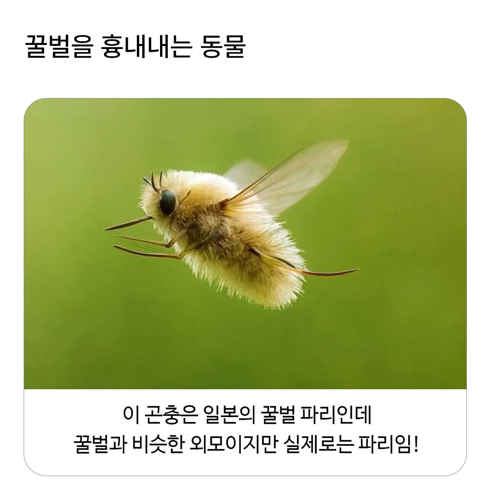
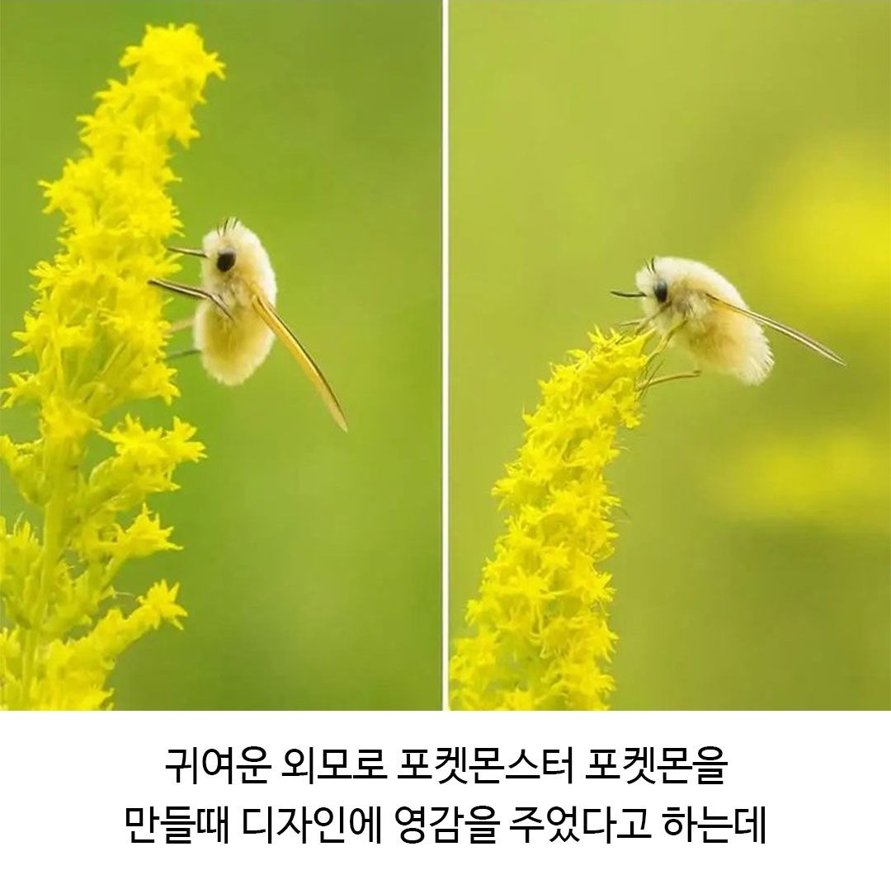
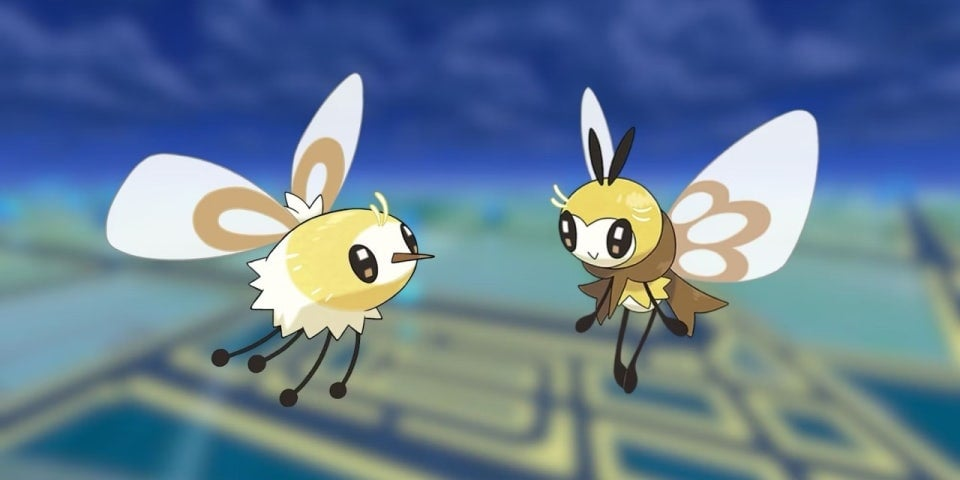
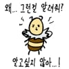
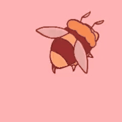
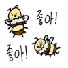

에블리



에블리


트월킹 미쳤네;
오늘한번죽어보자
보송보송
...폭신이니..?
그 뭐더라 더럽게 약하던데 전용기도 애매하고
전용기도 있고 부자네


먼 꿀벌파리야 한국에도 산에 가면 털보재니등에 많이 보이는데
그러게. 꿀벌파리라고 할만한놈은 꽃등에 아닌가 싶은데 전혀 안닮은놈을
귀엽다
잠깐.
집안에서 본다면 귀엽지않을것
야 꿀벌

넣을게
프로폴리스 없어서 존나 더럽겠지?
꽃등에 어릴떄 많아 잡았는데
한창 잡을떄는 진짜 날아다니는 폼만봐도 벌하고 꽃등에 구분했음
물론 존나 벌에 많이 쏘이고 나서...
누가 갈쳐준것도 아니고 혼자서 알아냈음 진짜벌이 아니라 벌처럼 생긴 가짜벌이 있다는거
나도 많이 잡음 ㅋㅋㅋ 딱 봐도 벌처럼 생긴 파리, 진짜 꿀벌 이렇게 섞여있어서 꿀벌만 잡았지 맨손으로
엥 벌만.....??? 나는 파리만 잡았는데
벌은 잡으면 쏘이잖아
꿀 빠느냐고 정신 없을때 뒤에서 날개만 탁 잡으면 안 쏘여
그때 걔네 냄새 맡아보면 엄청 향기로워
나도 어렸을때 구분 잘 안돼서 꽃등에인줄알고 걍 잡아챘는데 벌인적 많아서 개쏘임 ㅋㅋ 나중에는 벌도 날개 접을때 날개만 잡아서 안쏘이고도 잡음
쟤들 산에서 봤을때 다리를 쫙펴고 나는게 신기했는데
귀엽당
벌을 흉내내는가? = 일반 꽃등에가 더 벌처럼생김
파리인가? = 등에임
일본에만있나? = 한국에도있음 (털보재니등에)
맞는게 하나도없노
등에한테 물리면 부어오른거 2~3년 가던데 안없어지길래 알까고 숙주되서 죽는줄알음
지금 만져보니 15년 됐는데 아직 남아있음...뭐지
염증이 섬유화 된 걸 거임
나는 중학생 때 내려오는 시소에 정강이 뼈 긁힌 부분이 응어리로 남았음
한 14년은 된 거 같은데 지금 만져보니 좀 작아진 듯
야 파리.
소난다...넣을게...

퍼리..?
야꿀벌
아니 파리